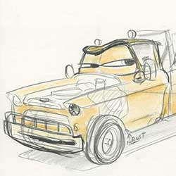
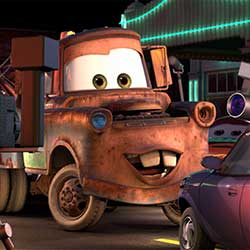
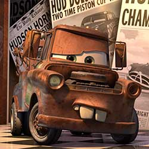
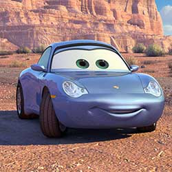
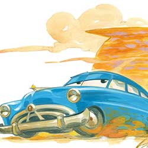
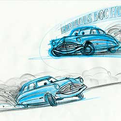
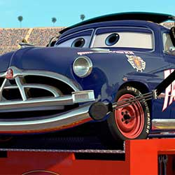
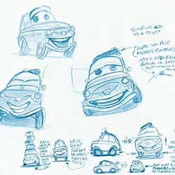
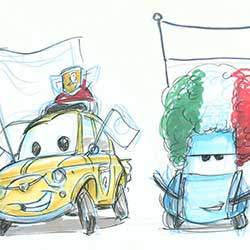
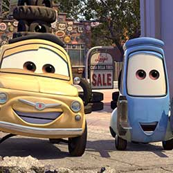

Aspiring champion race car Lightning McQueen is on the fast track to success, fame, and everything he's ever hoped for—until he takes an unexpected detour on dusty Route 66. His have-it-all-now attitude is thrown into a tailspin when a small-town community that time forgot shows McQueen what he's been missing in his high-octane life.
Rats are no strangers to rejection, but mcQueen, a rat who longs to be a great chef, has more than the usual obstacles to overcome. His remarkable sense of smell and genius for combining flavors puts him head and shoulders above most human chefs. However, in the rat world he’s resigned to a life of being the “poison sniffer,” using his unique talent to pick out the safe garbage for his family to eat.


Mater is a good ol' boy tow truck with a big heart and a lovable laugh to match. Though a little rusty, he has the quickest towrope in Carburetor County and is always the first to lend a helping hand. He's the sweetest, most loyal guy in town and the first to befriend newcomer Lightning McQueen.




Sally is a beautiful 2002 Porsche 911 from California who grew tired of life in the fast lane and made a new start in the small town of Radiator Springs. Charming, intelligent, and witty, she is the town's attorney and the car most dedicated to one day getting Radiator Springs "back on the map."




Doc Hudson is a 1951 Hudson Hornet, a quiet country doctor with a mysterious past. A cornerstone of Radiator Springs, Doc runs the local medical clinic and serves as the town judge. But when Lightning McQueen rolls through town, Doc's old competitive engine gets revved up once more.




Luigi is a 1959 Fiat 500 who runs the local tire shop, Luigi's Casa Della Tires. Big-hearted, gregarious and excitable Luigi is assisted by Guido, a little Italian forklift, and together they serve up more than a new set of wheels for customers. Their positive energy and enthusiasm have a natural way of rubbing off on anyone who passes through their shop doors.




Memorable research trips along Route 66 led the Pixar team to create the town of Radiator Springs in a high desert setting somewhere between Gallup, New Mexico, and Kingman, Arizona, where towns of broken neon, peeling paint, and colorful denizens still exist. “We connected with the people and their towns and we really got it,” Co-Director and Story Supervisor Joe Ranft observed. “We found out that life out on that old highway is never predictable, and that is what makes the journey so much more memorable. We found the heartbeat of the Mother Road.”
It took three days to prepare the first drawings that would define the Cars landscape. Working from an early inspiration board of automobile and desert references, Production Designer Bill Cone came up with an idea; he spent the day, and that night, thinking of how it could work. Then he rendered several sketches to illustrate his concept that cars, like humans, would shape the world around them as monuments that echoed their likeness. That happened back in 2000, and twelve years later, the landscape became real for generations to visit at Disney’s California Adventure.
The filmmakers knew no one would watch Cars with a keener eye than professional racing fans. Stock car legend Richard Petty was brought in to provide authenticity, then stayed around to provide voiceover for the 1970 Plymouth Superbird that shared his nickname “The King.” Pixar teams also took extended field trips to some of America’s biggest speedways, looking to capture the sensory overload of rumbling engines, blinding floodlights, and the smell of exhaust, burning rubber, and tailgate barbecue.
Graphics are not just creations made with words, names, numbers, letters, colors, and typeface—they are opportunities to include hidden stories. The world of Cars called for an unprecedented number of original graphics, split into three major categories: hometown, broadcast news, and stock car racing.
According to John Lasseter, more research went into Cars than any other project at Pixar to date. Field trips ranged from leisurely journeys across Route 66 to the fast lane of the Charlotte Motor Speedway, where a couple of infield fans named Larry and Mater would charm their way into the film. A Pixar team also traveled to the automotive mecca of Detroit to see how cars are designed and assembled from the ground up. Pixar artists used thousands of still photos and hours of car footage to give Cars the level of detail it would need on the big screen.
A colorscript is a sequence of small pastel drawings or paintings used to emphasize color in each scene and establish a film's visual language. A car lost on a lonely road. A racer outcast within a packed stadium. Many key emotional scenes of Cars took place at night. Creating the paintings to define the lighting provided an interesting challenge. “Light is fictional at night,” explained Production Designer Bill Cone. Light sources that could illuminate the scene had to be invented and manipulated just enough to allow the audience to see what was important, and yet still produce colors that stayed true to a scene's mood.
DIRECTED BY JOHN LASSETER
CO-DIRECTED BY JOE RANFT
PRODUCED BY DARLA K. ANDERSON
ASSOCIATE PRODUCER THOMAS PORTER
ORIGINAL SCORE COMPOSED AND CONDUCTED BY RANDY NEWMAN
FILM EDITOR KEN SCHRETZMANN
ORIGINAL STORY BY JOHN LASSETER, JOE RANFT, JORGEN KLUBIEN
SUPERVISING TECHNICAL DIRECTOR EBEN OSTBY
PRODUCTION DESIGNERS WILLIAM CONE, BOB PAULEY
PRODUCTION DESIGNER HARLEY JESSUP
SUPERVISING ANIMATORS WILLIAM CONE, BOB PAULEY
DIRECTOR OF PHOTOGRAPHY-CAMERA JEREMY LASKY
DIRECTOR OF PHOTOGRAPHY-LIGHTING JEAN-CLAUDE KALACHE
SHADING ART DIRECTOR TIA W. KRATTER
MATTE SUPERVISOR LISA FORSSELL
CHARACTERS SUPERVISOR TIM MILLIRON
SETS SUPERVISOR SOPHIE VINCELETTE
SHADING DIRECTIOR CHRIS BERNARDI, DAVID MUNIER
EFFECTS SUPERVISOR STEVE MAY
CROWDS SUPERVISOR ZIAH SARAH FOGEL
RENDERING SUPERVISOR JESSICA GIAMPIETRO MCMACKIN
OPTIMIZATION SUPERVISOR JESSICA GIAMPIETRO MCMACKIN
PRODUCTION MANAGER JONAS RIVERA
SOUND DESIGNER TOM MYERS
EXECUTIVE MUSIC PRODUCER CHRIS MONTAN
PRODUCTION FINANCE LEAD ALI ROWGHANI
CASTING BY KEVIN REHER
LIGHTNING MCQUEEN OWEN WILSON
DOC HUDSON PAUL NEWMAN
SALLY CARRERA BONNIE HUNT
MATER LARRY THE CABLE GUY
RAMONE CHEECH MARIN
LUIGI TONY SHALHOUB
GUIDO GUIDO QUARONI